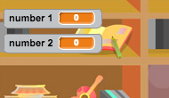
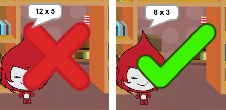
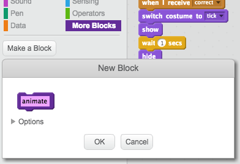

Let’s start by creating random questions for the player to answer.
Activity Checklist
Start a new Scratch project, and delete the cat sprite so that your project is empty. You can find the online Scratch editor at jumpto.cc/scratch-new.
Choose a character and a backdrop for your game. You can choose any you like! Here’s an example:
screenshot
Create 2 new variables called number 1 and number 2. These variables will store the 2 numbers that will be multiplied together.
screenshot
Add code to your character, to set both of these variables to a random number between 2 and 12.
when flag clicked
set [number 1 v] to (pick random (2) to (12))
set [number 2 v] to (pick random (2) to (12))
You can then ask the player for the answer, and let them know if they were right or wrong.
when flag clicked
set [number 1 v] to (pick random (2) to (12))
set [number 2 v] to (pick random (2) to (12))
ask (join (number 1)(join [ x ] (number 2))) and wait
if <(answer) = ((number 1)*(number 2))> then
say [yes! :)] for (2) secs
else
say [nope :(] for (2) secs
end
Test your project fully, by answering one question correctly and one with the wrong answer.
Add a forever loop around this code, so that the player is asked lots of questions.
Create a countdown timer on the stage, using a variable called time. The ‘Balloons’ project has instructions for making a timer (in step 6) if you need help!
Test your project again - you should be able to continue asking questions until the time runs out.
Save your project
Challenge: Changing costumes
Can you change your character’s costumes, so that they respond to the player’s answer?
screenshot
Challenge: Adding a score
Can you add a score to your game? You can add a point for every correct answer. If you’re feeling mean, you could even reset the player’s score to 0 if they get a question wrong!
Save your project
Step 2: Multiple games
Let’s add a ‘play’ button to your game, so that you can play lots of times.
Activity Checklist
Create a new ‘Play’ button sprite, which your player will click to start a new game. You can draw it yourself, or edit a sprite from the Scratch library.
screenshot
Add this code to your new button.
when flag clicked
show
when this sprite clicked
hide
broadcast [start v]
This code shows the play button when your project is started. When the button is clicked, it is hidden and then broadcasts a message that will start the game.
You’ll need to edit your character’s code, so that the game starts when they receive the start message, and not when the flag is clicked.
Replace the when flag clicked code with when I receive start.
screenshot
Click the green flag and then click your new play button to test it. You should see that the game doesn’t start until the button is clicked.
Did you notice that the timer starts when the green flag is clicked, and not when the game starts?
screenshot
Can you fix this problem?
Click on the stage, and replace the stop all block with an end message.
screenshot
You can now add code to your button, to show it again at the end of each game.
when I receive [end v]
show
You’ll also need to stop your character asking questions at the end of each game:
when I receive [end v]
stop [other scripts in sprite v]
Test your play button by playing a couple of games. You should notice that the play button shows after each game. To make testing easier, you can shorten each game, so that it only lasts a few seconds.
set [time v] to [10]
You can even change how the button looks when the mouse hovers over it.
when flag clicked
show
forever
if <touching [mouse-pointer v]?> then
set [fisheye v] effect to (30)
else
set [fisheye v] effect to (0)
end
end
screenshot
Save your project
Challenge: Start screen
Can you add another backdrop to your stage, which will become your game’s start screen? You can use the when I receive start and when I receive end blocks to switch between backdrops.
You can also show and hide your character, and even show and hide your timer by using these blocks:
show variable [time v]
hide variable [time v]
screenshot
Save your project
Step 3: Adding graphics
Instead of your character just saying yes! :) or nope :( to the player, let’s add some graphics that will let the player know how they are doing.
Create a new sprite called ‘Result’, containing both a ‘tick’ and a ‘cross’ costume.
screenshot
Change your character’s code, so that instead of telling the player how they did, it broadcasts correct and wrong messages instead.
screenshot
You can now use these messages to show the ‘tick’ or ‘cross’ costume. Add this code to your new ‘Result’ sprite:
screenshot
Test out your game again. You should see a tick whenever you get a question correct, and a cross whenever you get one wrong!
screenshot
Have you noticed that the code for when I receive correct and when I receive wrong is nearly identical? Let’s create a function to make it easier for you to make changes to your code.
On your ‘Result’ sprite, click More Blocks, and then ‘Make a Block’. Create a new function called animate.
screenshot
You can then add the animation code into your new animation function, and then just use the function twice:
screenshot
Now, if you want to show the tick and the cross for a longer or shorter time, you only need to make one change to your code. Try it!
Instead of just showing and hiding the tick and the cross, you could change your animation function, so that the graphics fade in.
define [animate]
set [ghost v] effect to (100)
show
repeat (25)
change [ghost v] effect by (-4)
end
hide
Save your project
Challenge: Improved animation
Can you improve the animation of your graphics? You could code the tick and cross so that they fade out as well as fade in. Or, you could use other cool effects:
screenshot
Save your project
Challenge: Sound and music
Can you add sound effects and music to your game? For example:
Playing a sound when the player gets an answer right or wrong;
Adding a ticking sound to your countdown timer;
Playing a sound when the time is up;
play drum (10 v) for (0.1) beats
You could also constantly play music on a loop (if you’re not sure how to do this, step 4 of the ‘Rock Band’ project will help you).
Save your project
Challenge: Race to 10 points
Can you change your game, so that instead of answering as many questions as they can in 30 seconds, the player has to see how quickly they can get 10 questions correct?
To do this, you’ll only need to change your timer code. Can you see what needs to be changed?
when I receive [start v]
set [time v] to (30)
repeat until <(time) = [0]>
wait (1) secs
change [time v] by (-1)
end
broadcast [end v]
Save your project
Challenge: Instruction screen
Can you add an instructions screen to your game, telling your player how to play the game? You’ll need an ‘Instructions’ button, and another stage background.
screenshot
You may also need a ‘Back’ button to take you to the main menu.
broadcast [main menu v]
Save your project
Hi there!
Seems like this is your first time here. Would you like a tour?